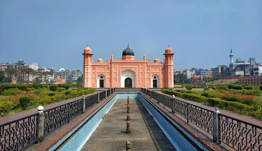
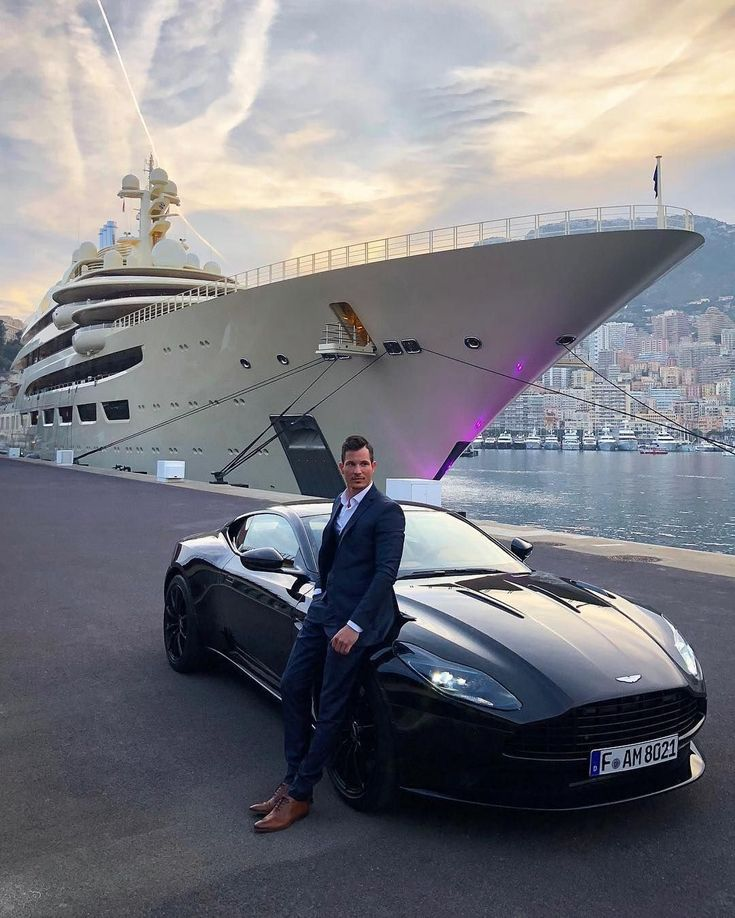
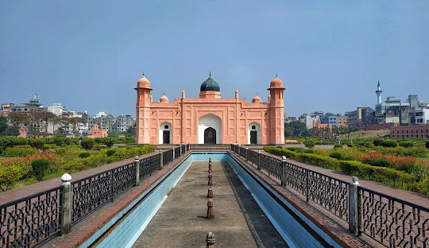
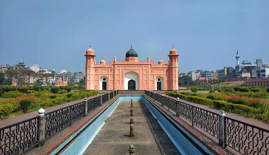

Greetings! My name is Sabahatul Alam Arib, a curious and enthusiastic student currently enrolled in Grade 7 at Maple Leaf International School Dhaka.
My journey through education has been filled with exciting discoveries and meaningful experiences. I thrive on challenges and am always eager to learn something new.
When I'm not busy with my studies, you can often find me engrossed in books, exploring new ideas, and nurturing my creativity. I'm particularly fond of reading books,travelling,listening to music and of course,my favourite,Programming! These activities allow me to express myself and unwind.
Living in the vibrant neighborhood of Banglamotor, I'm fortunate to be surrounded by a lively community. The rich culture and diverse experiences here provide a wonderful backdrop to my educational journey.
I believe in the power of knowledge to transform lives, and I'm committed to making the most of my time in school. With determination and a thirst for learning, I'm excited to see where this educational adventure takes me.
Thank you for stopping by and getting to know a bit about me!
My Hobbies
I find joy in a few simple yet enriching hobbies. Programming has become a fascinating puzzle for me, a realm where I bring ideas to life through code. Exploring new places through travel is another passion, as it opens my eyes to different cultures and perspectives. Music is my constant companion, providing a soundtrack to life's moments. These pursuits, from coding to exploring the world and immersing myself in melodies, add depth and color to my journey.
My City
The name of my City is Dhaka. Dhaka, the capital city of Bangladesh, is a vibrant tapestry of culture, history, and modernity. Nestled on the banks of the Buriganga River, it is a city that never sleeps, with bustling markets, lively streets, and a constant hum of activity. The heart of Bangladesh's political, economic, and cultural landscape, Dhaka seamlessly blends ancient traditions with a dynamic urban environment.The city boasts a rich history, evident in its Mughal and British architectural landmarks, such as Lalbagh Fort and Ahsan Manzil. Its diverse population brings together a kaleidoscope of cultures, languages, and cuisines, creating a unique and inclusive atmosphere. Dhaka's bazaars, like New Market and Shankhari Bazaar, offer a sensory feast of colors, scents, and flavors.While Dhaka is a city of contrasts, with its bustling streets juxtaposed against serene parks like Ramna Park, it is also a testament to resilience and progress. The skyline is punctuated by modern skyscrapers, reflecting the city's continuous evolution.Dhaka is not merely a city; it's an experience, a vibrant mosaic of life, and a testament to the indomitable spirit of its people.

My Ambition
In the grand tapestry of aspirations, I aim to be a billionaire in my life.Becoming a billionaire is a path fraught with challenges, but I approach it with a steadfast determination and an unwavering work ethic. I believe in the power of innovation, in creating solutions that address pressing global issues. Through entrepreneurship and strategic investments, I aim to build businesses that not only thrive but also serve a greater purpose.Ultimately, my aim to be a billionaire is not a goal in isolation, but a means to an end—a means to make a meaningful, lasting impact on the world and to leave a legacy that transcends mere wealth.

The World Around Me
In the tapestry of existence, my surroundings are a canvas of vibrant experiences and infinite possibilities. The world around me is a symphony of diverse landscapes, cultures, and lives intertwining in a dance of existence.From the bustling streets of urban life to the serene embrace of nature's sanctuaries, there is a constant interplay of energies, each telling its own story. The cityscape pulsates with life, its rhythm set by the ebb and flow of human endeavor. Skyscrapers pierce the sky, standing as testament to human ingenuity and aspiration, while parks and green spaces offer pockets of respite, inviting contemplation and rejuvenation.Every face, every voice, and every interaction bears the imprint of unique journeys, woven together by the threads of our shared humanity. I find inspiration in the myriad stories that unfold around me, in the resilience of those who overcome adversity, and in the boundless creativity that colors our endeavors. As I navigate this dynamic world, I strive to be an active participant, embracing opportunities for growth and learning. I seek to understand, to empathize, and to contribute meaningfully to the narrative of our collective existence. Through this engagement, I find purpose, forging connections and leaving my mark, however small, on this ever-evolving tapestry of life.


 
